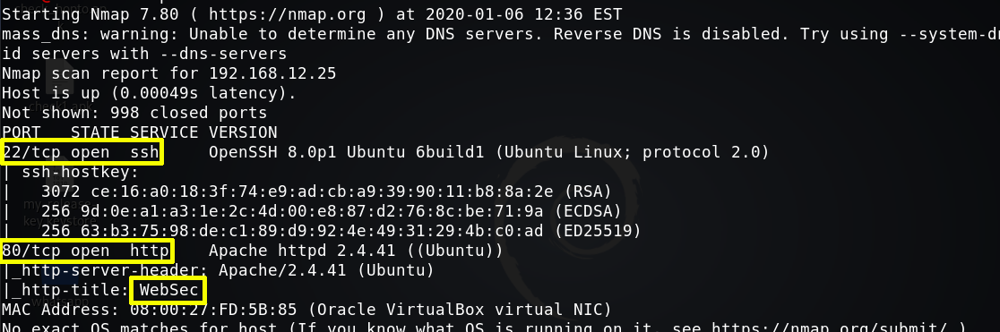

2. Finding Services and Ports
$nmap
-A 192.168.12.25
Output:

We found port 22, 80 Open HTTP.
We see the target machine “http_title”.
Websites with a “websec” directory run on “CMS applications”.
Index
 Index
Index